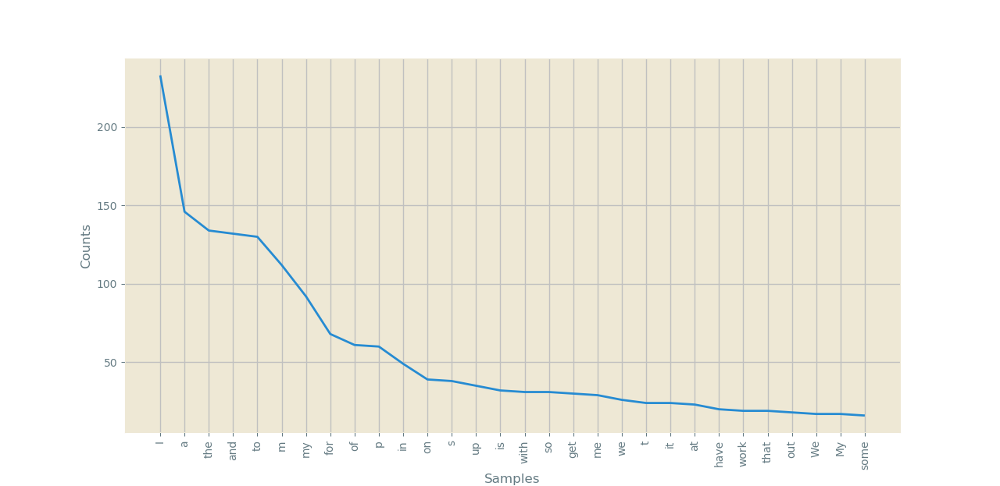

Requests is a simple but vital library for Python, letting a programmer create easy HTTP requests to a server, making getting, posting, updating, or deleting data from a server a easier process. As a aspiring journalist, request is a great library because it allows one to easily gather data that can be turned into a dataframe with Pandas and analyzed.
To give a example of a intresting usage of data gotten with a request, let look at the Refinery29 Money Diary article about the intern who makes 25$ per hour plus a 1000$ allowence that justifilably made the internet blow up. In this case gathering data about word usage.
To begin, if you do not have requests installed already, in your command line enviroment, do pip install requests to install requests.
Then at minimum, here is the following code to grab the data.
url = 'https://www.refinery29.com/money-diary-new-york-city-marketing-intern-income'
req = requests.get(url)Now that requests has grabbed the data, the most important part comes in, cleaning the data and extracting the information that one wants.
In this case, we will be using Beautiful Soup a Python package that makes it easy to extract text from webpages. Additionally, to make sure the information we collect is accurate, we will be cleaning it as well.
The BS portion is fairly simple as well, in this case, here is an example.
soup = BeautifulSoup(req.text, 'html.parser')
# print(soup)
text = soup.find_all(class_='section-text')
strText = str(text)Once the data is collected, it is time to clean it, using the following Regex, I created some simple functions that can clean text. They are displayed below.
def cleanHTML(text):
return re.sub('<[^<]+?>', '', str(text))
def removeMisc(text):
return re.sub("’:,‘", '', str(text))
def remove_non_ascii(text):
return unidecode(str(text))
def cleanser(text):
return remove_non_ascii(removeMisc(cleanHTML(text)))The following functions remove HTML along with any non UTF-8 charachters that could cause problems later.
Now to create create a chart looking at most common words, several steps need to be taken. First if not done already pip install matplotlib and pip install nltk and import them. Next, with NLTK now it is time to convert the array of text into tokens.
tokenizer = RegexpTokenizer(r'\w+') #This tokenizer more hi-powered then the usual ones...
tokens = tokenizer.tokenize(cleanedText)
print(tokens)With the data as tokens, several things can be done. Firstly, one can turn this data into a pandas dataframe, and then into a csv file that counts frequency.
With a simple df.head() or df.tail() or df.describe(), useful information can be extracted from the data set. To do that, pip install pandas, then import pandas as pd, and look at the following
fd = nltk.FreqDist(tokens)
fdS = pd.Series(fd)
print(fdS)
df = pd.DataFrame(fdS)
print(df.tail())
df.to_csv("ref28Data.csv", encoding='utf-8', index=True)This turns the tokens into a dataframe, which then can be analyzed and turned into a csv file so other people can more easily look at the data set.
Finally, another important tool in looking at data gathered with requests is matplotlib, with a chart created with matplotlib created below.

As seen the most common word, considiring it is a diary, is I, with very common words being followed below. An additional form of analysis would be getting rid of all the common words, and looking at that dataset.
With just requests, we were able to pull in data that could power several different forms of analysis. This is just one out of the many examples of how requests can be able to collect data for research.